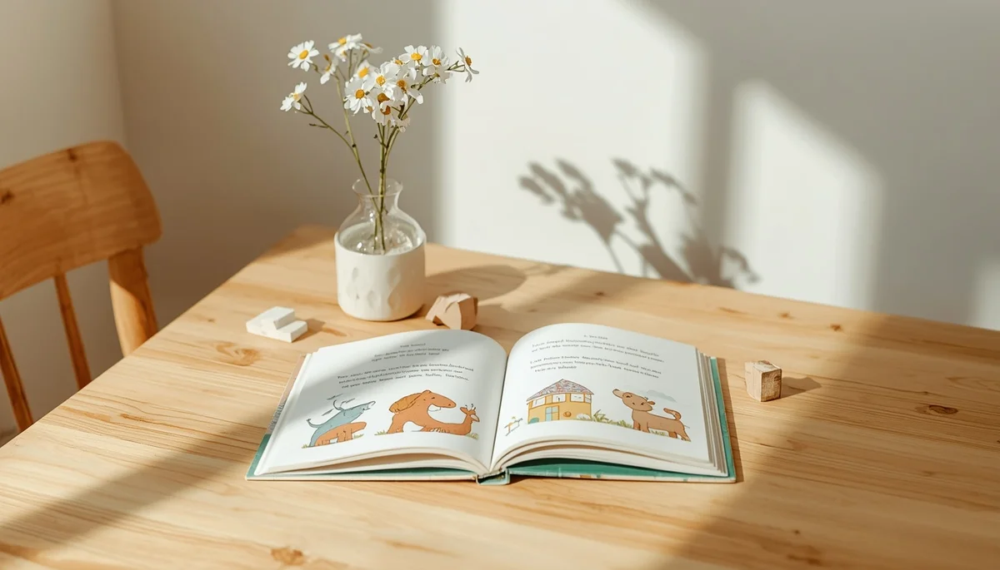

Salud auditiva infantil: detección precoz y cuidado
La capacidad auditiva es un pilar fundamental para el desarrollo del lenguaje, la comunicación y el aprendizaje durante la infancia. Detectar cualquier alteración de forma temprana permite ofrecer el acompañamiento adecuado y asegurar el bienestar evolutivo del menor. He reunido aquí los pilares esenciales para comprender el desarrollo auditivo, identificar señales de alerta y cuidar la salud de los oídos en el día a día. Pincha en cada tarjeta para profundizar en cada tema.
Hitos del desarrollo auditivo según la edad
Descubre cómo evoluciona la capacidad de respuesta a los sonidos desde los primeros meses de vida hasta la etapa preescolar y escolar.
Señales de alerta de pérdida auditiva en casa y el aula
Aprende a identificar indicios sutiles como la falta de reacción ante ciertos tonos, subir excesivamente el volumen o retrasos en el habla.
El papel clave de las pruebas de cribado y revisiones
Comprende en qué consisten las otoemisiones acústicas y los potenciales evocados, y por qué son vitales en los primeros controles de salud.
Otitis de repetición y su impacto temporal en la audición
Cómo afectan las infecciones de oído frecuentes a la transmisión del sonido y qué pautas seguir para un seguimiento médico adecuado.
Higiene segura: desterrando el mito de los bastoncillos
Pautas correctas para la limpieza externa de los oídos y por qué los bastoncillos suponen un riesgo para los conductos y tímpanos infantiles.

Prevención frente al ruido excesivo y pantallas
Medidas para moderar el volumen en dispositivos electrónicos, juguetes ruidosos y entornos urbanos para proteger la salud auditiva temprana.

Audición, lenguaje y estimulación verbal en casa
Estrategias cotidianas para enriquecer el vocabulario, practicar la escucha activa y favorecer una comunicación clara con el menor.

Cuándo consultar al especialista y recursos de apoyo
Información orientativa sobre el papel del otorrino, pruebas audiológicas complementarias y el acompañamiento en caso de adaptaciones.
🎧 Continúa profundizando en el desarrollo y bienestar infantil
Para acompañar la crianza y la atención a las necesidades de comunicación de forma integral, te sugerimos explorar estos recursos:
- 🎙️ Escucha el podcast: Claves para estimular el lenguaje y la atención temprana (Ep. 11)
- 📥 Descarga el recurso práctico: Mapa de Hitos Comunicativos y Auditivos (PDF)